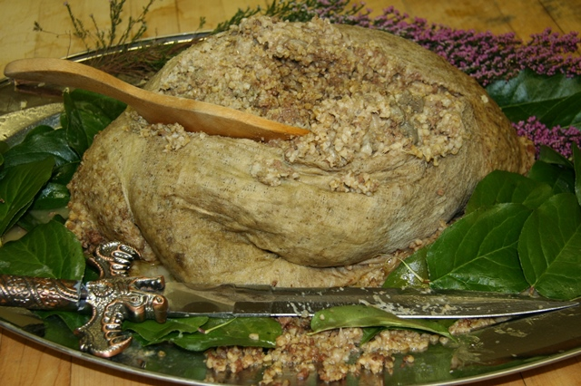

Guests are greeted with bagpipes, and the pipes reappear to greet the guest of honor, the haggis. The host will then address the haggis with Burns’ Address to a Haggis, calling it the “great chieftain o’ the pudding-race”. He will then cut it open from end to end, sprinkle it with whisky as part of a Scottish whisky toast, and serve it with the traditional side dishes of mashed neaps (turnips) and tatties (potatoes).
Known in medieval Celtic culture as a story teller, verse maker and composer, the word ‘Bard’ has become synonymous with the world’s greatest poets. However, few are as celebrated as Scotland’s own ‘National Bard’, Robert Burns, who we pay tribute to on 25 January each year.
So basically it is a day to worship a poet.